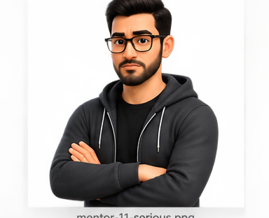

Choose the detail needed for the decision.
A use case can be expressed as a short name, a high-level start-to-finish statement, or an expanded interaction sequence. These are levels of specification—not three different actor goals.
One goal, progressively richer descriptions
Verb–noun phrase: Search Programs. Enough to name and organize the goal.
Beginning and ending: This use case begins when the user selects “Search for Programs” and ends when matching programs are displayed.
Step-by-step interaction: actor actions, system responses, alternatives, exceptions, preconditions, and postconditions.
Frame the observable start and finish
Search for Programs
Begins: A SAMS user selects the Search for Programs link.
Ends: The user sees programs satisfying the search criteria.
Withdraw Cash
Begins: The ATM customer inserts a card.
Ends: The customer receives the correct cash and transaction record.
High-level use cases should not narrate background processing
Too implementation-focused
The controller calls the account service, updates the database, and sends a query to the cache.
Actor-centered
The customer receives confirmation that the transfer has completed successfully.
Internal collaboration can be modeled later with sequence diagrams or design models. A high-level use case ends with what the actor wanted to accomplish.
Add steps where uncertainty or risk requires them
- The happy path is not shared or obvious.
- Alternative and exception flows materially affect scope.
- Business rules or authorization decisions must be agreed.
- Estimation requires a clearer interaction sequence.
- Acceptance tests need explicit observable behavior.
“Abstract use case” in these lecture slides means the concise verb–noun description level. Do not confuse it with UML’s separate concept of an abstract classifier used in generalization.

Use the abstract name to organize goals, the high-level form to define actor-visible start and finish, and the expanded form to capture interactions and alternatives when needed.